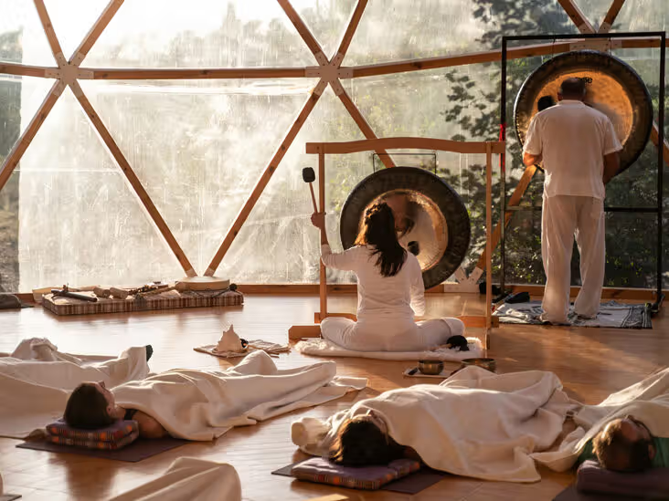
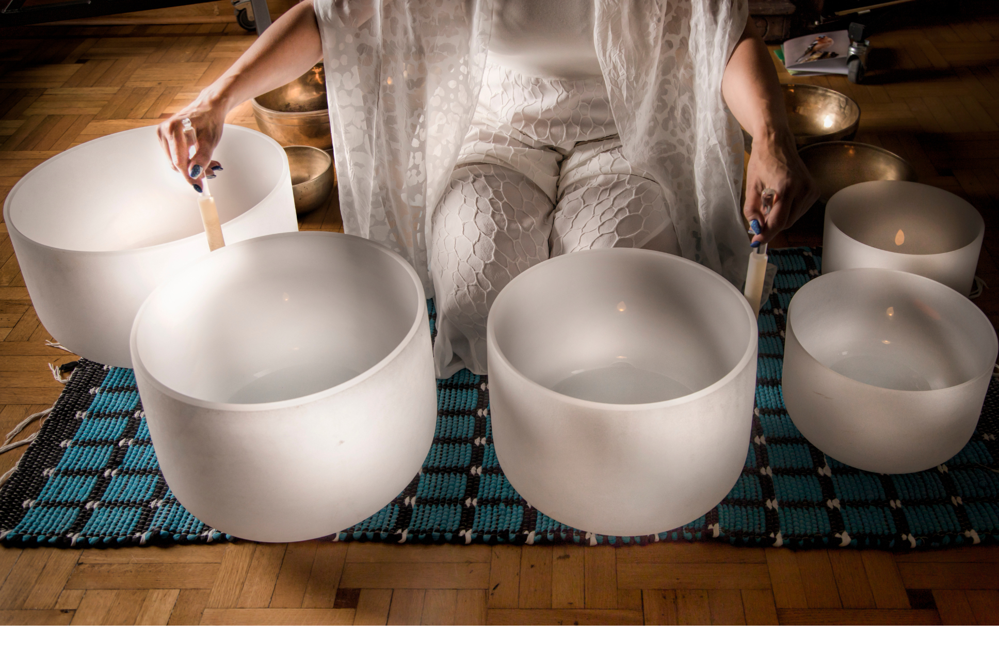

SOUND HEALING
Vibration • Balance • Stillness
Vibrational Medicine
Sound Healing is a therapeutic practice that uses vibration and frequency to restore harmony within the body, mind, and nervous system.
Immersed in the resonance of singing bowls, gongs, and crystal instruments, the body naturally enters deep relaxation, allowing stress, tension, and energetic blocks to dissolve.
Sound Healing Offerings
Tibetan Singing Bowls
Deep Cellular RelaxationHand-hammered bowls create vibrations that gently massage the body, calm the nervous system, and bring the mind into stillness.
Gong Bath Meditation
Sonic ResetA powerful immersive experience where waves of sound clear emotional and energetic blockages, guiding you into a meditative, trance-like state.


Crystal Bowl Healing
Chakra AlignmentQuartz crystal bowls tuned to specific frequencies help balance chakras, improve clarity, and deepen spiritual awareness.
Group Sound Baths
Collective HealingShared sound journeys designed for relaxation, emotional release, and community connection in a calm, nurturing space.